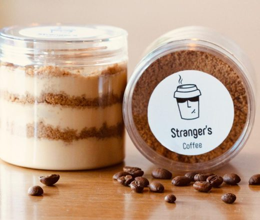

مجلة سترينجرز التفاعلية
من مزرعة على ارتفاع ألفي متر، إلى فنجان على طاولتك. ومن كيس دقيق، إلى كرواسون يخرج من فرن الفرع الساعة السادسة. هاتان رحلتان نمشيهما كل يوم.
لا نشتري «بنّاً». نشتري محصولاً من مزرعة لها اسم، وارتفاع، وطريقة معالجة تغيّر طعم الفنجان تماماً.
ثمرة حمراء تنضج على ارتفاع ألفي متر. داخلها بذرتان: هما القهوة.
ست محطات بين قطف الثمرة ووصولها فنجانك. اسحب أفقياً.
دقيق وزبدة وحليب وخميرة. أربعة أشياء فقط، ولا شيء جاهز.
من كيس الدقيق إلى رفّ العرض في الفرع. خمس محطات تبدأ قبل الفجر.